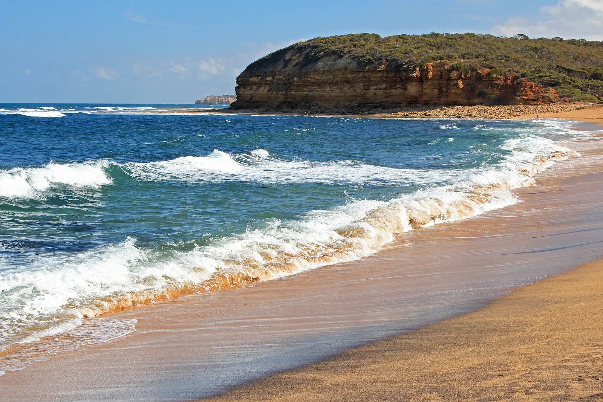

Bells Beach
Australie · surf

Temple du surf australien : un point break puissant qui accueille la plus ancienne compétition pro du monde (depuis 1962).
- Lieu
- Australie
- Niveau
- Intermédiaire
- Activités
- surf
- Type d'eau
- Mer / océan
- Coordonnées
- -38.37, 144.28 (position approximative du secteur)
Dangers à connaître
- Houle puissante.
- Reef.
Le conseil d'Ocean Buddy
Vague de caractère ; combinaison conseillée, l'eau du détroit de Bass est fraîche.
Ouvrir dans Ocean Buddy Télécharger sur l'App Store
Source : Description historique Ocean Buddy · vérification externe en attente.